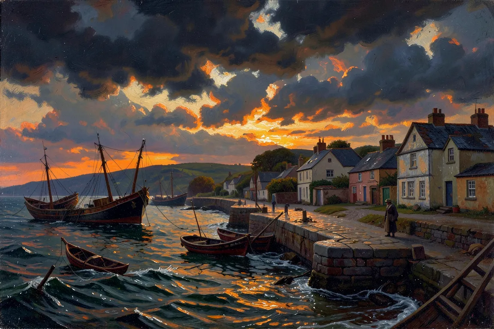

painting · 1790–1860s · also: Romantic painting, The Sublime
Pictures of storm, sea, ruin, passion and distant lands, in which feeling comes before rule. Nature is vast and the person is small; colour and brush carry the mood.

Core thesis
A picture should move the viewer by emotion and by awe, and so the painter puts feeling, nature and imagination above the cool rules of the academy.
Design principles
Make nature large and the figure small: a person at 5–15% of the picture height against a sky, a sea or a peak.
Open a deep space with a strong diagonal or a vortex, and lead the eye to a glowing horizon or a storm centre.
Use a dark, heavy foreground and a bright, burning distance: a value jump of 50% or more between them.
Choose a strong, warm and cold colour pair: a red or gold fire against a blue-green storm.
Show the hand: loose, wet strokes of 10–40mm in the sky and sea, and a hard edge only at the main figure.
Add a back-turned figure (Rückenfigur) or a wreck, so that the viewer stands inside the feeling.
Take the subject from history, literature, the exotic or the weather, and show the moment of peak action or loss.